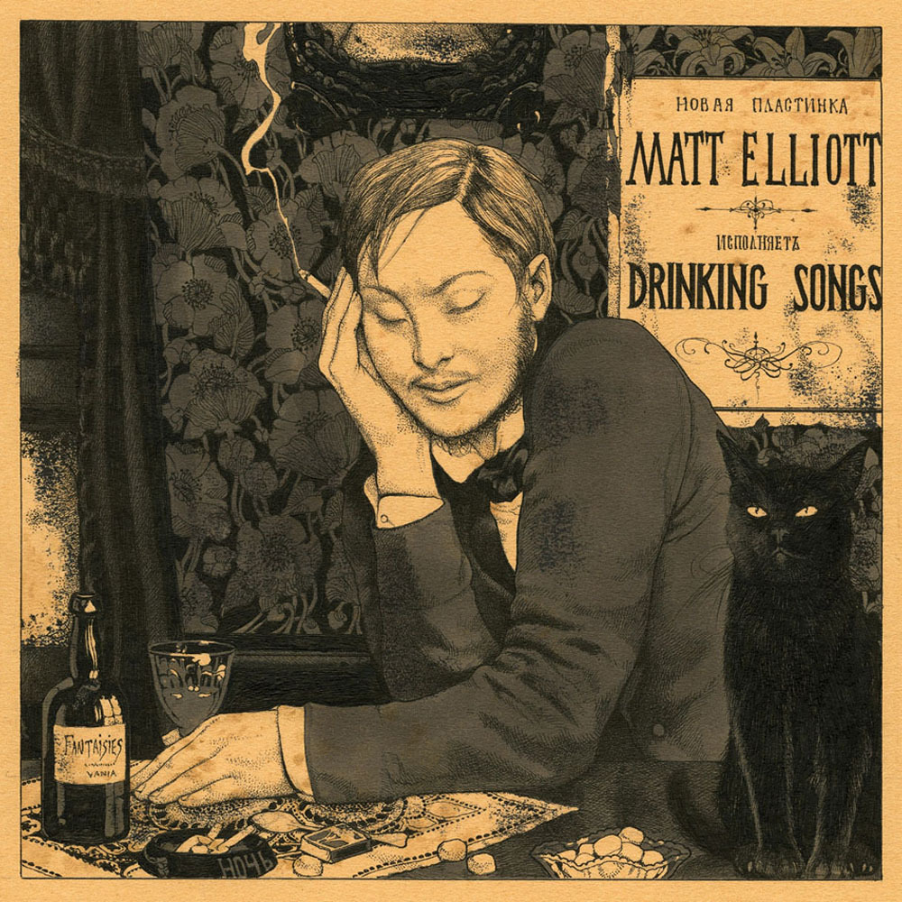

That week didn’t just exhaust me. It peeled something back.
We walk through life like it’s permanent. Like the people we love are just… always going to be there. Like health is the default setting. Like tomorrow is guaranteed. But hospitals are brutal truth machines. They don’t argue with you. They just show you.
I remember this guy, fresh out of a motorcycle accident. Broken, bleeding, but conscious enough to talk. He looked at no one in particular and said, “I’m a motherfucking idiot for doing that… if time goes back for even one second… just one… now I know how blessed I was.”
That sentence didn’t sound like regret. It sounded like someone discovering reality too late.
In another corner, there were women, maybe daughters, maybe wives, I don’t know. Crying in a way that didn’t even look human anymore. It was raw. Uncontrolled. Like their bodies were trying to process something their minds refused to accept. All their hope, compressed into one fragile idea: please let him still be alive. Just prayer as the last thread holding everything together.
That environment messes with your head. It makes life feel both incredibly valuable/privileged and completely fragile at the same time. You start drifting into this strange, almost nihilistic perspective where everything feels temporary
All of this. And one arbitrary moment can fold the table.
I kept thinking about the doctors. How do they metabolize this daily? How do you clock in, knowing your job is to stand at the exact border where life argues with death — knowing death doesn't lose, has never lost, is undefeated — and still pour yourself a coffee and go again?
That place felt like hell. Not because of the pain alone. Because of the accumulation of endings.
"I work all day, and get half-drunk at night.
Waking at four to soundless dark, I stare.
In time the curtain-edges will grow light.
Till then I see what’s really always there:
Unresting death, a whole day nearer now,
Making all thought impossible but how
And where and when I shall myself die.
Arid interrogation: yet the dread
Of dying, and being dead,
Flashes afresh to hold and horrify.
The mind blanks at the glare. Not in remorse
—The good not done, the love not given, time
Torn off unused—nor wretchedly because
An only life can take so long to climb
Clear of its wrong beginnings, and may never;
But at the total emptiness for ever,
The sure extinction that we travel to
And shall be lost in always. Not to be here,
Not to be anywhere,
And soon; nothing more terrible, nothing more true.
This is a special way of being afraid
No trick dispels. Religion used to try,
That vast moth-eaten musical brocade
Created to pretend we never die,
And specious stuff that says No rational being
Can fear a thing it will not feel, not seeing
That this is what we fear—no sight, no sound,
No touch or taste or smell, nothing to think with,
Nothing to love or link with,
The anaesthetic from which none come round."
That specific dread he knew so well — the one that ambushes you in the dark before dawn, when the curtain edges haven't yet gone light and the mind is too tired to lie to itself. The dread that isn't about regret, not really. Not the unlived moments, not the love left unspoken. Something colder than that. The dread of total erasure. No sight. No sound. Nothing to think with. Nothing to link with. Just the sure extinction we've all been quietly traveling toward since the first breath, accelerating without our permission.
No philosophy patches that. No religion sutures it cleanly — just beautiful, moth-eaten fabric stitched together to make the wall look like a door.
That's what that week handed me. Not grief. Not wisdom. Not even sadness in any shape I recognized.
Just the truth that most of us keep at arm's length until something — a hallway, a stranger's last breath, a waiting room full of people unraveling — closes the distance without asking.
And there I was. Standing in the gap. No curtain anymore. Just the view, and nowhere to put it.
I don’t think the lesson is to fear death. That’s too naive.
I think the lesson is realizing how casually we treat what we’d beg to keep if it started slipping away.
Because one day, whether we like it or not, everything we assume is permanent will ask us a very simple question:
Did you actually value this while you had it?
And most of us… won’t have a good answer ready.

Finished at Fri, Apr 17.2026